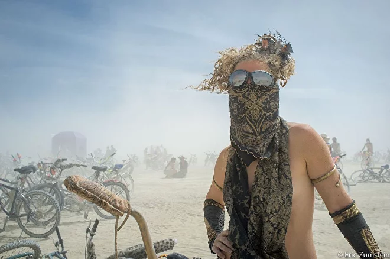
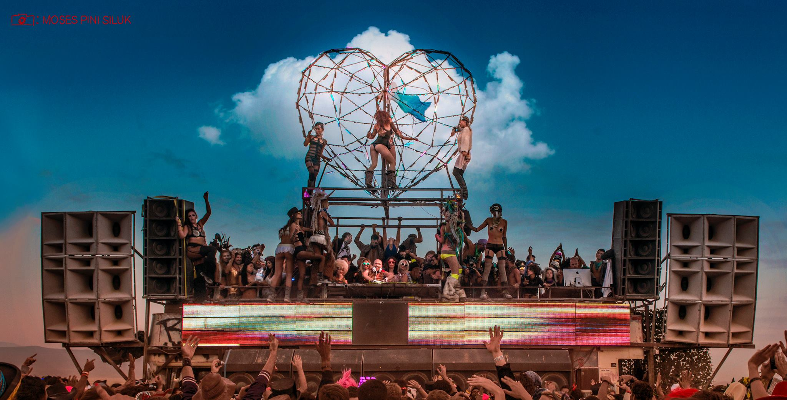
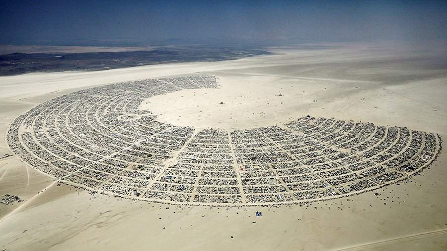

Фестиваль Burning Man
Что это за событие?
Один раз в году 80 000 человек собираются в пустыне Блэк-Рок в Неваде, чтобы своими руками построить Блэк-Рок-Сити, временный мегаполис, который существует 8 дней и посвящен искусству и самовыражению. Все это называется Burning Man или Горящий человек. Это не фестиваль в обычном его понимании: по словам создателей, это эксперимент по созданию общества радикального самовыражения. Участники строят Блэк-Рок-Сити самостоятельно, а город подразделяется на две основных зоны - жилую с лагерями участников, и плайн, на котором располагаются разнообразные арт-объекты. В Блэк-Рок-Сити нет товарно-денежных отношений в их привычном понимании: вы можете прийти в любой лагерь, и вас обязательно примут, развлекут, угостят едой или напитками, подберут экстравагантный наряд или покажут представление - театральное, цирковое, вокальное или любое другое. Этот город живет по законам идеального общества, но, к сожалению, обойти его весь за время мероприятия физически невозможно.
История фестиваля
 Впервые «Бернинг мэн» состоялся в прошлом веке, в 1986 году: тогда около двадцати человек в честь летнего солнцестояния собрались на пляже Сан-Франциско
и сожгли двухметровую деревянную фигуру человека. Уже через пару лет статуя стала достигать 9 метров, а на мероприятие прибыли 200 человек.
К 2022 году Burning Man превратился в один из самых главных мероприятий в мире, и, вероятнее всего, в самое интересное.
Это не просто фестиваль: это среда, которая раз и навсегда меняет сознание и отношение к жизни.
Впервые «Бернинг мэн» состоялся в прошлом веке, в 1986 году: тогда около двадцати человек в честь летнего солнцестояния собрались на пляже Сан-Франциско
и сожгли двухметровую деревянную фигуру человека. Уже через пару лет статуя стала достигать 9 метров, а на мероприятие прибыли 200 человек.
К 2022 году Burning Man превратился в один из самых главных мероприятий в мире, и, вероятнее всего, в самое интересное.
Это не просто фестиваль: это среда, которая раз и навсегда меняет сознание и отношение к жизни.
Процитируем десять принципов, которые лежат в основе философии и культуры фестиваля Burning Man:
- Радушие (Radical Inclusion). Любой может стать частью Burning Man. Участники стремятся быть открытыми и доброжелательными, принимать людей такими, какие они есть.
- Дарение (Gifting). Burning Man поощряет культуру дарения подарков, услуг, искусства и опыта без ожидания материального вознаграждения.
- Нет коммерции (Decommodification). Сообщество против коммерциализации и рекламы, приветствуется максимальная взаимопомощь.
- Самодостаточность (Radical Self-reliance). Участники обязаны обеспечить себя всем необходимым для выживания и комфорта в условиях пустыни
- Самовыражение (Self-Expression) через искусство, костюмы, участие в активностях и выступлениях.
- Совместные усилия (Communal Effort). Вносить вклад в создание общей среды и поддерживать социальное и экологическое благополучие фестиваля.
- Гражданская ответственность (Civic Responsibility). Участники отвечают за соблюдение местных, государственных и федеральных законов.
- Не оставлять следов (Leaving No Trace). Относиться бережно к окружающей среде и стремиться оставить место даже чище, чем оно было до вас.
- Участие (Participation). Экстремальные условия жизни в пустыне помогают человеку почувствовать, что он полезен кому-то еще. Каждый приглашается к работе.
- Быть здесь и сейчас (Immediacy). Burning Man за непосредственное переживание момента без ухода в гаджеты и посторонние мысли.
Где и когда пройдет ?
Пустыня Блэк-Рок, штат Невада, США, старт в последние выходные августа, окончание в первые выходные сентября — с 25 августа по 2 сентября 2024 года. 
Как и когда купить билеты?
Для приобретения билетов необходимо зарегистрироваться на специальном сайте, встать в очередь и ждать старта предпродажи.
Кто выступает?
 Привычного лайнапа на "Огоньке" нет. Выступления музыкантов могут быть организованы силами участников кемпов.
Где жить?
 Фестиваль проводится в самой настоящей пустыне, поэтому все необходимое нужно вести с собой. Жизнь сосредотачивается вокруг лагерей, каждый из которых строится командой участников. Чтобы жить в лагере, нужно или состоять в его команде во время застройки, либо оплачивать денежный взнос, стоимость которого составляет ориентировочно от 200$ до 2500$ в зависимости от лагеря. Ознакомиться со списком всех лагерей можно на сайте фестиваля. Можно поехать самостоятельно “дикарем”, но в этом случае всем необходимым придется запастись заранее — от воды и еды до средств по уборке.
Как добраться?
Для въезда в США россиянам потребуется американская виза. На фестиваль можно попасть четырьмя основными способами: на автобусе Burner Express,
самолете, искать попутку или ехать на своей машине. Автобус отправляется из Рино (90$)и из Сан-Франциско (135$),
в его цену так же включены 2 места багажа и специального места для палатки в кемпинге. Самолетом можно добраться из Лас-Вегаса,
Рино и еще нескольких аэропортов в Калифорнии. Стоимость перелета в один конец составляет примерно 300$.
Также можно скооперироваться с другими бернерами и поехать на фестиваль с ними, или арендовать автомобиль и ехать за рулем самостоятельно.
А еще можно забронировать дом на колесах и жить в нем.
Событие очень известно во всем мире и можно найти много различных роликов о фестивале.
Например, история как путешественник и блогера Антон Птушкин посетил его в 2019 году.
{kind=link}
{kind=link}
{kind=link}
{kind=link}
{kind=link}
{kind=link}
{kind=link}
{kind=link}
{kind=link}
{kind=link}
{kind=link}
{kind=link}
{kind=link}
{kind=link}
{kind=link}